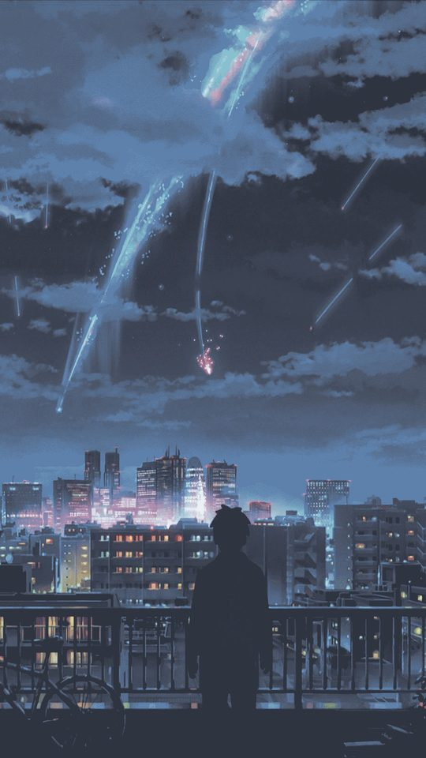
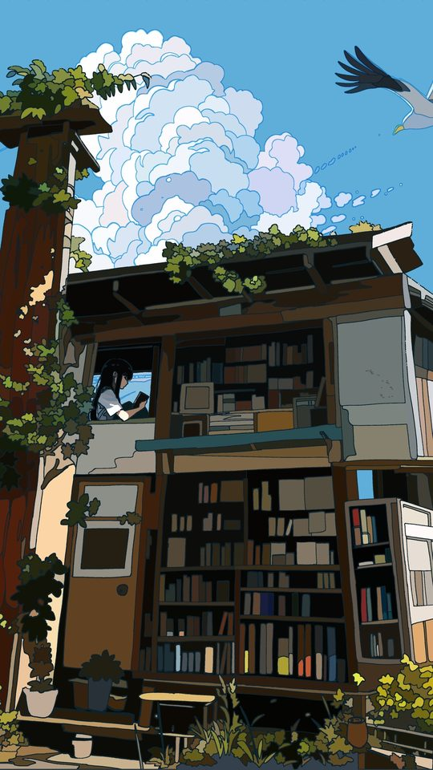
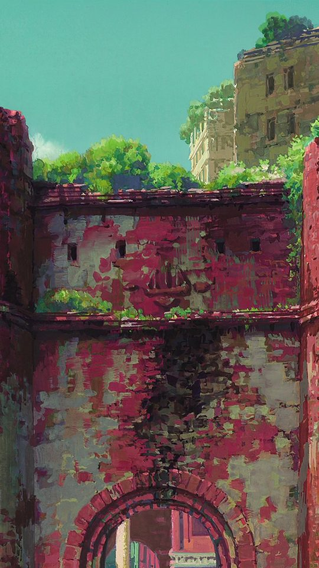

Why 1080×1920 Matters: An Anime Wallpaper Resolution Guide

This guide explains how phone screen resolution and aspect ratio affect how an anime wallpaper looks once it is set. You will learn how to find your own screen's exact pixel size, why a portrait crop almost always beats a stretched landscape image, and how to check whether a wallpaper will look sharp before you commit to it. The numbers below apply to nearly every phone sold in the last five years.
Finding your phone's real resolution
The number you need is the screen's pixel dimensions in portrait, written as width by height. Almost all modern phones are 1080 pixels wide, but the height varies a lot.
- Open Settings.
- Tap About phone, then Display or All specs depending on the brand.
- Look for Resolution or Screen resolution. Samsung lists it directly; Pixel phones show it under Display as an option you can switch between.
- If the phone does not list it, search your exact model number online, as the resolution is always published.
Write the result down as width by height. A common flagship value is 1440 by 3200, while most mid-range phones are 1080 by 2400.

Aspect ratio: 9:16 versus 9:19.5 versus 9:20
Aspect ratio is the relationship between width and height. It is the single most important number for wallpaper quality, because a mismatch is what causes stretching or unwanted cropping.
- 16:9 (1080 by 1920): The older standard, still found on tablets and some budget phones. A 1080 by 1920 wallpaper fills it perfectly.
- 19.5:9 (1080 by 2340): Common on many phones from 2019 to 2021.
- 20:9 (1080 by 2400): The most common ratio today, used on countless mid-range and flagship Android phones.
- 19.5:9 tall variants (1440 by 3200): High-resolution flagships.
If you set a 16:9 image on a 20:9 screen, the phone either crops the sides off or stretches the image vertically, making characters look slightly elongated. Neither is ideal, which is why matching the ratio matters.

Why a portrait crop beats a stretched landscape image
A landscape anime image is usually composed with the subject centred and the background spreading left and right. When you force that into a tall phone screen, two things go wrong: the background becomes a narrow slice, and any character gets squashed or stretched. A portrait crop instead selects a vertical window from the source and keeps proportions honest. The character stays the same shape, and you simply lose the empty background on either side.
The practical rule is never to stretch, always to crop. If a source image is landscape and you want it on a portrait phone, choose a vertical slice that contains the character, and discard the rest. That single change fixes the most common wallpaper complaint.
There is one more wrinkle worth knowing. Your phone may use two different crops at once. Many Android phones let you set separate wallpapers for the home screen and the lock screen, and the lock screen sometimes shows a slightly taller or shorter slice because of the clock area. If you set the same image on both and it looks fine on one but oddly cropped on the other, that is why. Setting one image and checking both screens takes a few seconds and avoids the surprise of a chin or shoulder being cut off only on the lock screen.
Common phone resolutions at a glance
| Screen size class | Typical resolution | Aspect ratio | Best wallpaper size |
|---|---|---|---|
| Older or budget | 720 by 1280 | 16:9 | 1080 by 1920 |
| Standard 1080p | 1080 by 1920 | 16:9 | 1080 by 1920 |
| Tall mid-range | 1080 by 2340 | 19.5:9 | 1080 by 2340 |
| Common today | 1080 by 2400 | 20:9 | 1080 by 2400 |
| High-res flagship | 1440 by 3200 | 20:9 | 1440 by 3200 |
Sourcing a wallpaper slightly larger than your screen is fine and even preferable, because the phone downscales cleanly. Sourcing one smaller is not, because the phone has to invent pixels and the result looks soft.

How to check sharpness before you set it
You can judge a wallpaper in a few seconds without setting it.
- Open the image in your gallery and zoom in on the character's face or eyes.
- Look at the edge of a line, such as a dark line against a flat colour. If it looks blocky or fuzzy, the image is too small.
- Check the file size. A 1080 by 2400 wallpaper is usually between 500 KB and 3 MB as a JPEG. A 40 KB file at that resolution has been over-compressed.
- Look for banding in gradients, where smooth sky or shading turns into visible stripes. That is a compression problem rather than a resolution problem, and it will look worse on the phone than on a computer screen.
If the wallpaper passes these checks at full size, it will look good on the phone. If it fails, find a larger or less-compressed version rather than setting it anyway.

Frequently asked questions
Does a higher-resolution wallpaper look better?
Only up to your screen's resolution. Beyond that, the phone simply downscales and you gain nothing visible while using more storage. Matching your screen or going slightly above is the sweet spot.
Why does my wallpaper look stretched after setting it?
The image's aspect ratio does not match your screen's. The phone is filling the gap by stretching rather than cropping. Use an image with the same ratio as your screen, or crop it yourself to that ratio before setting it.
Is 1080 by 1920 still useful?
As a source size, yes, if your screen is 1080 pixels wide. A 1080 by 1920 image set on a 1080 by 2400 screen will be cropped or scaled, so ideally you want a source at least 2400 pixels tall for a modern phone.
Can a wallpaper be too large?
In practice, no. Android handles large images fine, though extremely large files take a moment longer to set. Anything up to about 4000 pixels tall is safe and will be downscaled cleanly.